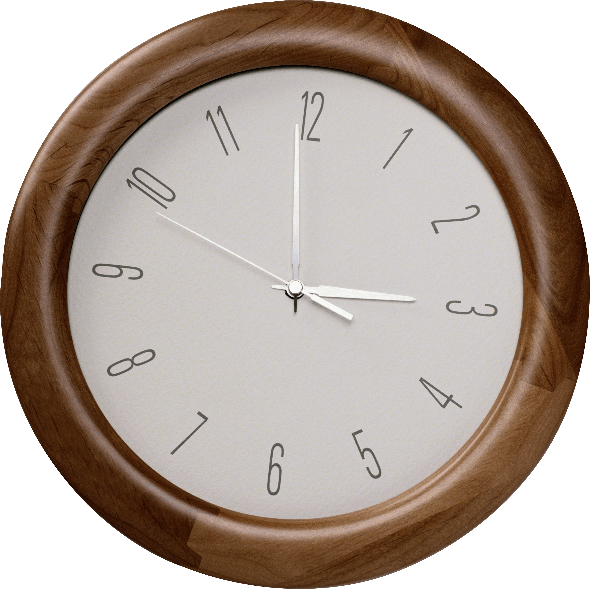
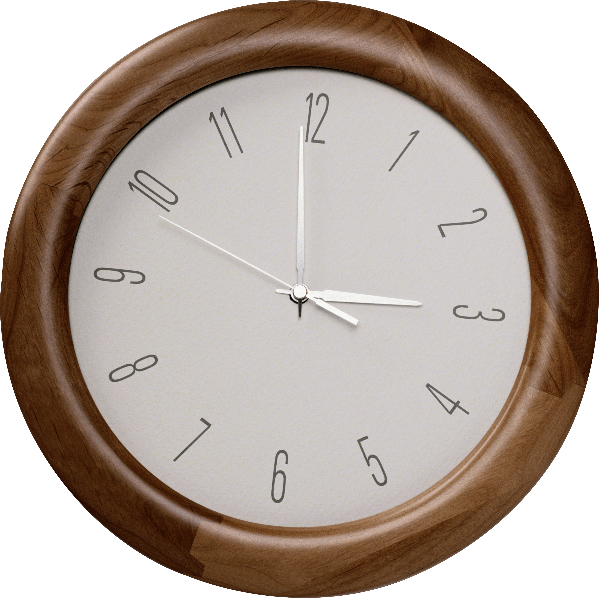
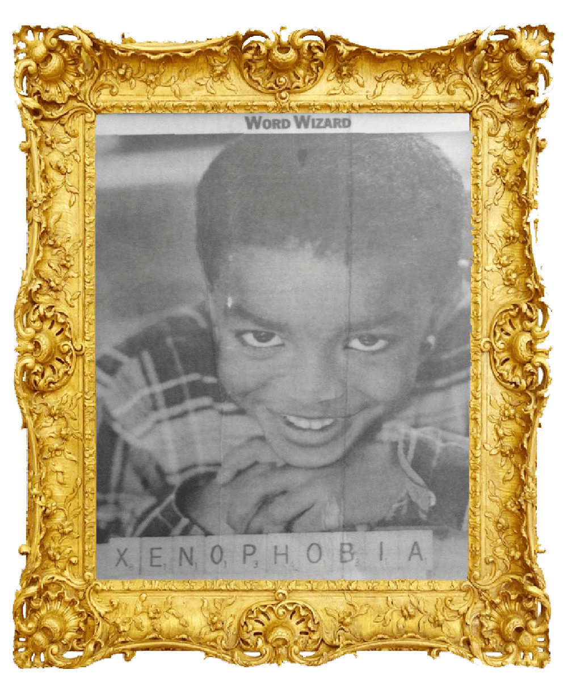
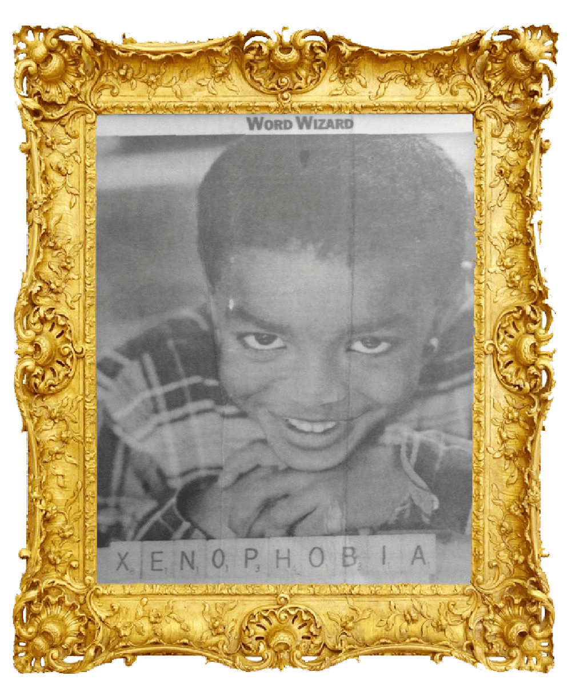

 



A note from Eric Larson, director of Intermediate Meme Museum:
Everyone wants to tell you or ask you what memes are, what they do. As the director of Intermediate Meme Museum, I have the privilege of diffusing those questions and answers and letting them melt into each other. Memes are fun and not fun, often at the same time. Memes do fun things and not fun things, often at the same time. They’re too articulate and anti-articulate and they’re dismissed and worshipped for this. Stuck in their ways and yet too experimental, they’re and/or and/or and/or.
Instead of getting lost in the muck of the What, IMM is committed to playing in the Everything Else of memes. We do not totalize. And yet IMM is not apolitical. In fact, IMM prioritizes anti-oppressive voices, ideas, and aesthetics that are not featured in the mainstream conception of the mainstream meme conversation. We’re not trying to “promote†our anomalous work to the mainstream, but rather provide a platform for the overlooked to learn from others’ overlooked-ness. To get ready.
We’re Minnesota-based because it’s more fun that way. There are more hidden spaces closer to the ground. We curate mostly through relationships, but always welcome the unconnected. Memes do funky things with place, and so we have chosen not to be located everywhere. All of the folks involved in IMM have tangents that point back to Minnesota.
The first three releases of IMM (because who knows what will happen after that) are curated around certain meme themes and dynamics unique to each release. Due to the tendency of memes and art to outgrow or evade definition only to be sucked back into a vortex of Overarching Theme, the framing that led to my curatorial decisions will be omitted from the IMM website. This way, unexpected resonances between pieces can emerge, and I can avoid committing the meme-killing act of third party deciphering. While we have Museum in our name, we are not here to capture an experience for you. Instead, we’re showing you a number of portals into things going on right now in the memeworld and elsewhere. Please be cautious and enjoy.